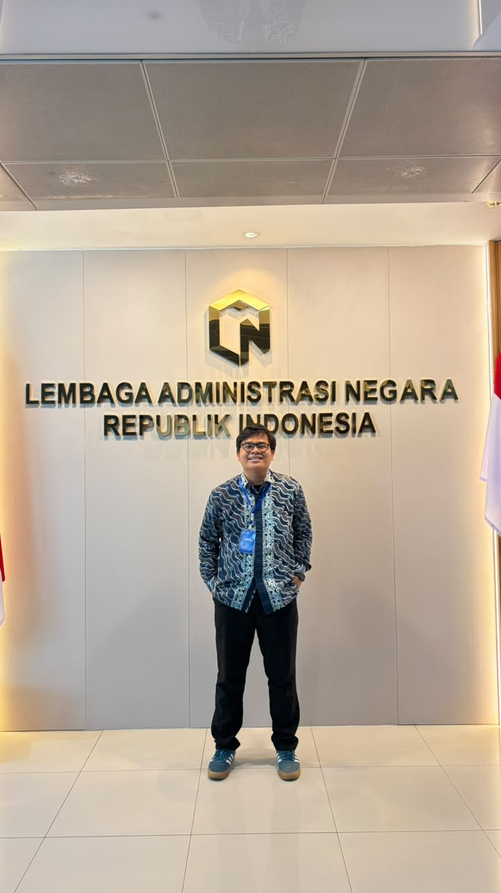
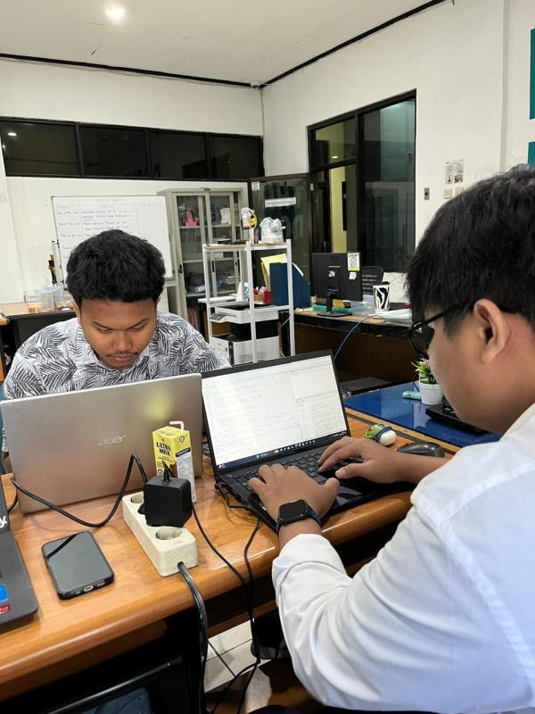
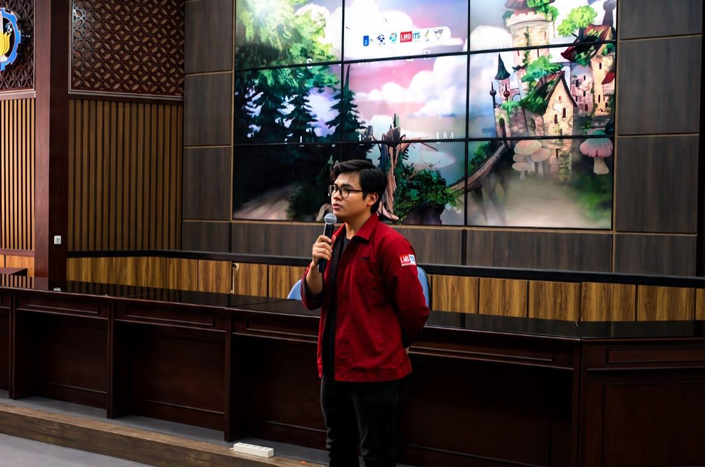
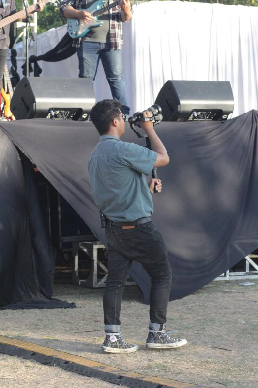
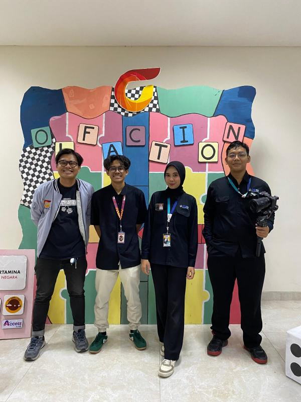
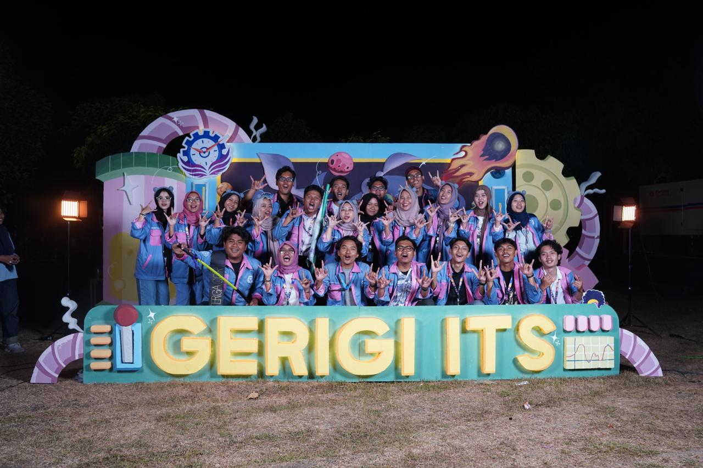
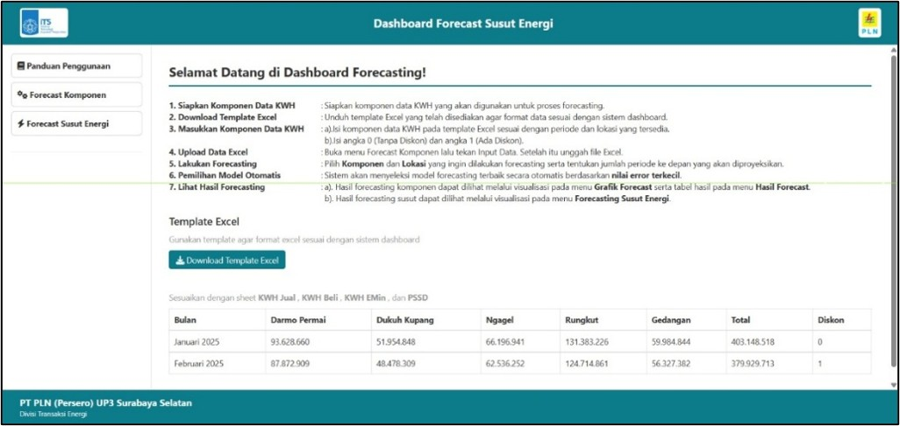
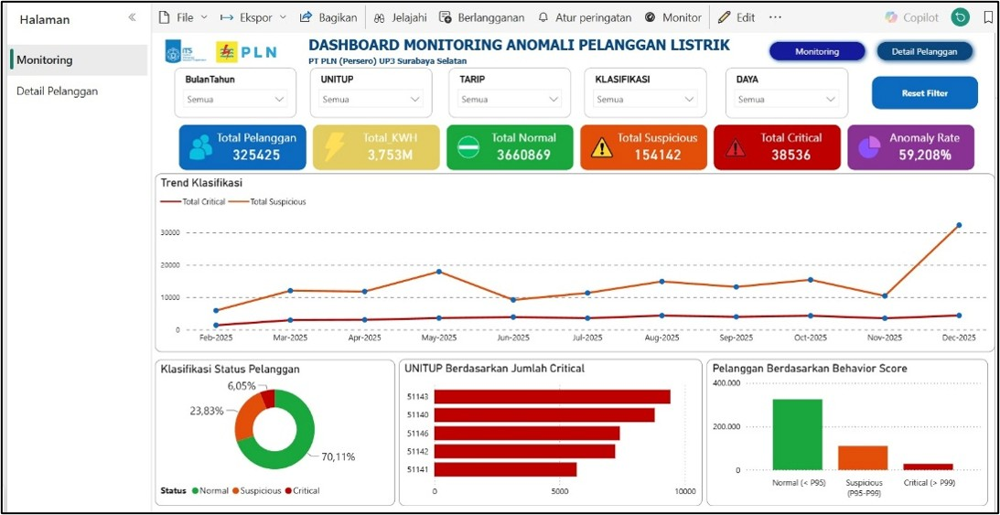
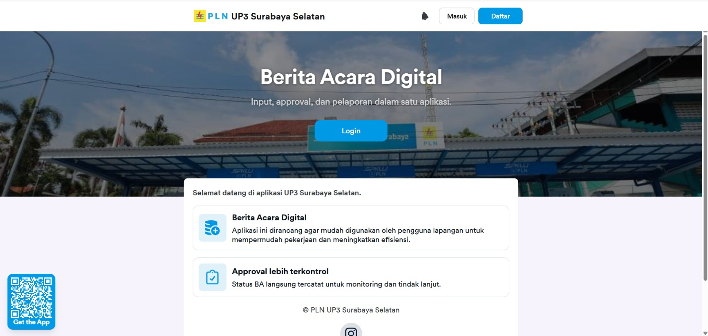
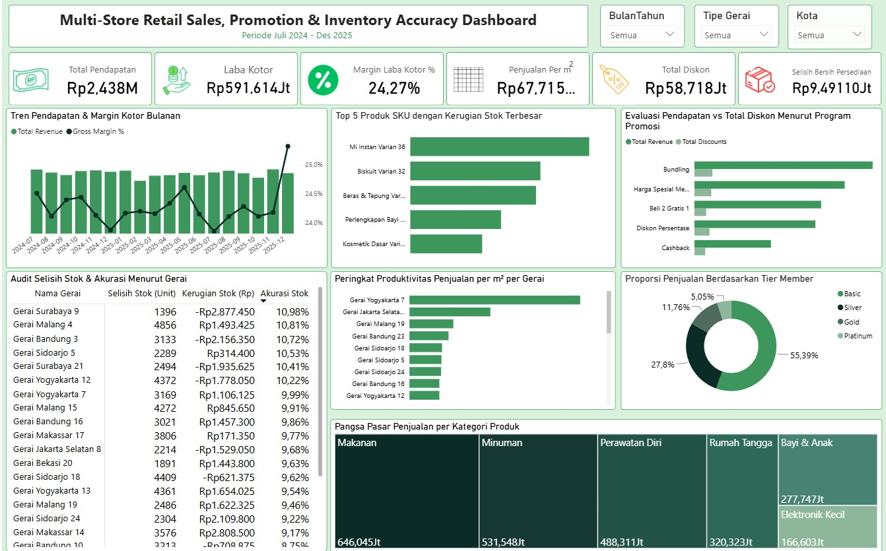

PORTFOLIO

ABOUT ME
A graduate with a Bachelor of Applied Statistics from Institut Teknologi Sepuluh Nopember (ITS), holding a GPA of 3.26/4.00 and a Business Intelligence Analyst certification. Possesses practical experience in building Power BI dashboards, processing data using Power Query and DAX, and conducting statistical analysis with SQL, Python, R, SPSS, and Minitab. Skilled in transforming raw data into actionable business insights through data visualization tools such as Tableau and Data Studio to support operational decision-making.
SOFTWARE & TECHNICAL SKILLS
LANGUAGES & SOFT SKILLS
EDUCATION
Bachelor of Applied Statistics
Aug 2022 – Aug 2026Experience & Involvement
Data Analyst & Information Management Intern
Lembaga Administrasi Negara – Jakarta
- Manage and validate training program data; process and analyze data using Power BI, Rshiny, and Microsoft Excel by developing data driven dashboards and reports.
- Support the presentation of information and the formulation of recommendations to facilitate management decision making.

Data Analyst Intern
PT PLN (Persero) UP3 Surabaya Selatan – Surabaya
- Built an Rshiny based energy loss forecasting dashboard for the South Surabaya region, which integrates energy transaction data and automatically selects the best-performing model based on error metrics (MAPE, MAE, MSE), achieving an error rate of approximately 1–2%.
- Developed an anomaly monitoring dashboard using Power BI that classifies approximately 325.000 customers into specific categories based on behavior scores, featuring automated data refreshes from OneDrive.
- Automated the generation of official reports (berita acara) using Jotform Apps, incorporating real-time approval workflows and document status tracking.

Surveyor Project
PDAM Kota Surabaya – Surabaya
- Collect, verify, and manage household customer data for service analysis purposes, ensuring data accuracy in the field.
Head of External Relations Bureau
LMB ITS 2024 – Institut Teknologi Sepuluh Nopember
- Lead the External Relations Bureau in designing and executing programs, as well as coordinating its members.
- Serve as the primary point of contact for external parties regarding benchmarking visits and collaborative initiatives.
- Act as the Organizing Committee Chair for inter campus benchmarking events specifically “Lokakarya 2024” and “Simposium 2024” overseeing committee coordination, planning, and communication with participating campus.

Head of Content Creator Division
VOKASI ITS FESTIVAL 2024 – Institut Teknologi Sepuluh Nopember
- Led a creative team comprising videographers, photographers, and editors in designing and executing digital media campaign strategies for the event.
- Directed the production of an official teaser series and behind the scenes reels content, which successfully garnered over 50,000 cumulative views on Instagram Reels.

Creative Expert Staff
OLFACTION 2024 – Institut Teknologi Sepuluh Nopember
- Develop visual storyboards, direct camera positioning, and arrange lighting angles for the production of teaser videos and aftermovies.
- Producing promotional Reels content that garnered over 47,000+ views on Instagram contributed significantly to the enthusiasm of the festival audience.

Mentor
GERIGI ITS 2024 – Institut Teknologi Sepuluh Nopember
- Guide and direct new ITS students in adapting to campus life, covering academic procedures, dress codes and campus regulations, non academic activities, and the management of student organizations.
- Provide guidance on academic planning, campus culture, and effective time and activity management to support students transition into university life.

My Portfolio
Click on a project card to view the website preview, result screenshots, features, and complete software details

Dashboard Forecast Susut Energi
Automated forecasting system with a 1-2% error rate across 5 South Surabaya regions.

Dashboard Monitoring Anomali Pelanggan Listrik
Real time OneDrive to Power BI visualization for customer status classification.

Berita Acara Digital
Digital platform for input, tiered approval, and field report documentation.

Multi Store Retail Sales Dashboard
Analysis of turnover, gross margin, promotional discounts, and inventory accuracy across 24 stores.

Hotel Management in Netherlands
Interactive visualization of hotel locations, room types, price ranges, and reviews.

Climate Change and Agriculture Analysis
Analytical dashboard evaluating the impact of climate shifts on agricultural productivity.

Dashboard Rain Australia
Interactive operational reporting and data visualization based on Looker Studio.